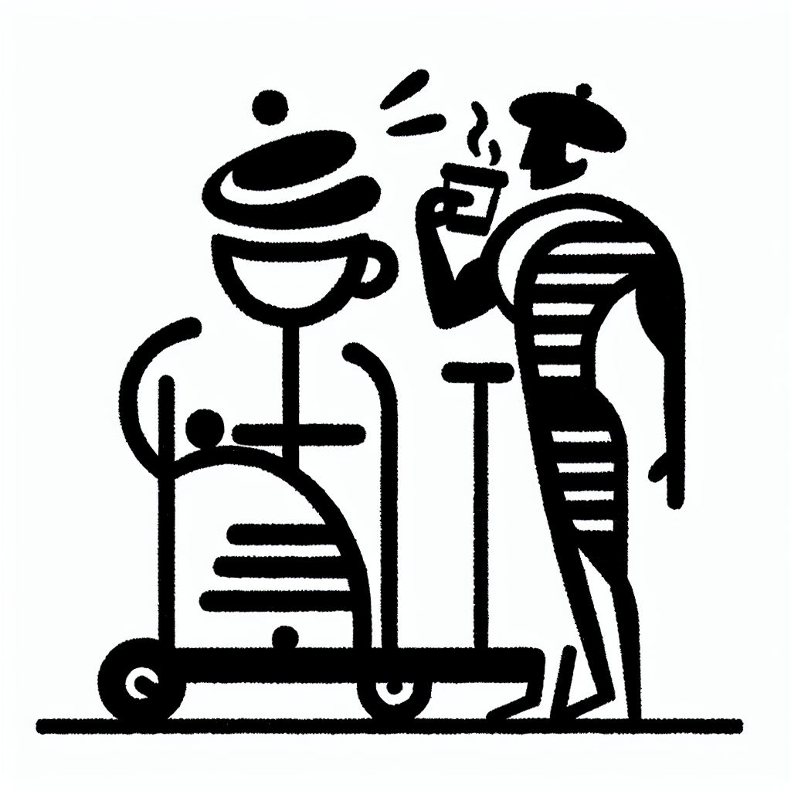

L'histoire de Sébastien Lagree et de sa méthode
L'histoire de Sébastien Lagree et de sa méthode
Séduisant les adeptes du fitness en quête de renouveau, la méthode Lagree est rapidement devenue un incontournable dans le monde du bien-être. Mais quelle est l'histoire de son créateur, Sébastien Lagree, et pourquoi cette méthode a-t-elle conquis tant d'adeptes, y compris sur notre côte basque chez DOZ ? Aujourd'hui, nous vous emmenons dans un voyage fascinant à travers l'histoire de cette révolution du renforcement musculaire.
Les débuts de Sébastien Lagree : de la musique au fitness
Originaire de la France, Sébastien Lagree ne se destinait pas à une carrière dans le fitness. Sa première passion était en réalité la musique. Après avoir déménagé aux États-Unis pour poursuivre des rêves dans l'industrie musicale, les choses ont rapidement pris un tournant inattendu.
Face aux défis du monde artistique, Sébastien décide d'explorer d'autres horizons, découvrant ainsi le monde du fitness. Inspiré par différentes méthodes d'entraînement et fort de son esprit innovant, il commence à concevoir une approche totalement nouvelle du renforcement musculaire qui allie intensité et efficacité.
La naissance de la méthode Lagree
Avec la création de la machine Megaformer, fruit de sa recherche incessante, Sébastien Lagree pose la première pierre de ce qui deviendra une entreprise florissante. L'objectif était clair : développer une méthode permettant de travailler chaque muscle du corps en profondeur, sans risque de blessure, et le tout en un temps record.
La méthode Lagree repose sur quatre principes fondamentaux :
- Sécurité : Une approche sans impact minimisant les risques de blessures.
- Efficacité : Des séances de 45 minutes combinant cardio, force et endurance.
- Polyvalence : Adaptée à tous, que l'on soit novice ou expert.
- Concentration : Une attention portée à chaque mouvement pour maximiser les résultats.
L'impact global et le lien avec DOZ à Anglet
La méthode Lagree a rapidement rencontré un succès mondial, séduisant des célébrités et des anonymes en quête d'une discipline mêlant effort et plaisir. Ce n'est pas simplement un programme de fitness ; c'est un mode de vie qui prône la santé physique et mentale.
Chez DOZ, nous sommes fiers d'accueillir le premier Studio Lagree de la région. Notre espace, en parfaite harmonie avec la philosophie 'Instant Brut', associe modernité et simplicité pour offrir un cadre idéal à nos membres. Ici, le béton brut rencontre le bois et le métal pour une ambiance à la fois épurée et accueillante.
Pourquoi choisir la méthode Lagree à DOZ ?
Intégrer la méthode Lagree dans votre routine est plus qu'un simple choix de fitness. C'est un engagement envers soi-même pour un mieux-être global :
- Un encadrement de qualité : Nos coachs sont formés pour vous guider et ajuster chaque exercice selon vos besoins.
- Une synergie unique : Commencez votre journée par une séance intense et revitalisante, suivie d'un moment détente dans notre Coffee Shop.
- Une communauté : Rejoindre DOZ, c'est intégrer une famille partageant les mêmes valeurs de santé et de bien-vivre.
Rejoignez-nous dans cette aventure!
Nous vous invitons à découvrir par vous-même les bienfaits de la méthode Lagree et notre chaleureux Coffee Shop à Anglet. Réservez dès aujourd'hui votre première session et plongez dans l'univers DOZ, où le sport rime avec bien-être, et où chaque pause café est un instant de pure satisfaction et de réconfort.